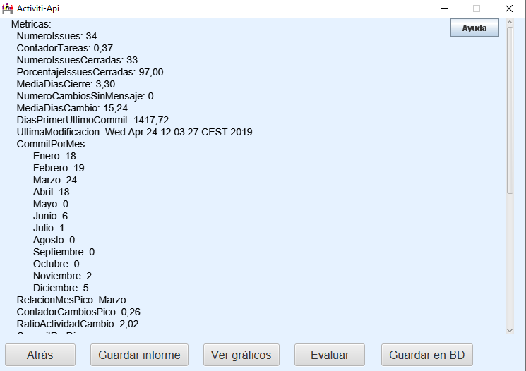

En esta pantalla se muestran los resultados de las métricas realizadas con los datos obtenidos del repositorio seleccionado.
También podemos guardar los resultados en un archivo para cargarlos directamente en otra ocasión mediante el botón Guardar informe.
La informacion se muestra en el panel por defecto, donde aparece una lista con los valores de todas las métricas calculadas en modo texto.

Aparecen también otros tres botones:
El botón Ver gráficos que lleva a la pantalla de los gráficos realizados sobre las métricas.
Evaluar, que pasa a realizar una evaluación del desarrollo del proyecto basándose en los existentes en la base de datos.
El botón Guardar en BD, que guarda los datos de las métricas del proyecto en la base de datos.
También aparece un botón Atrás para volver a la pantalla inicial.